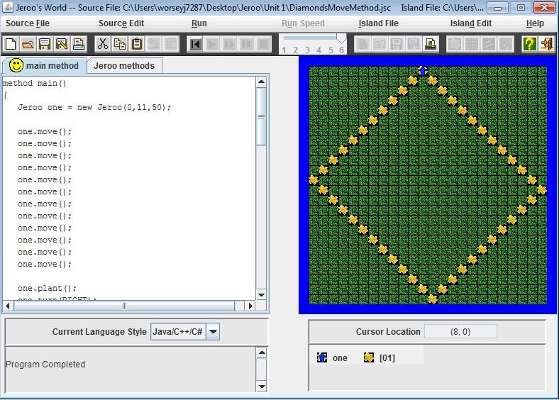
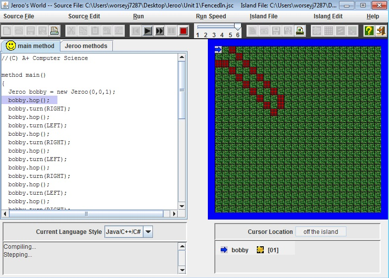
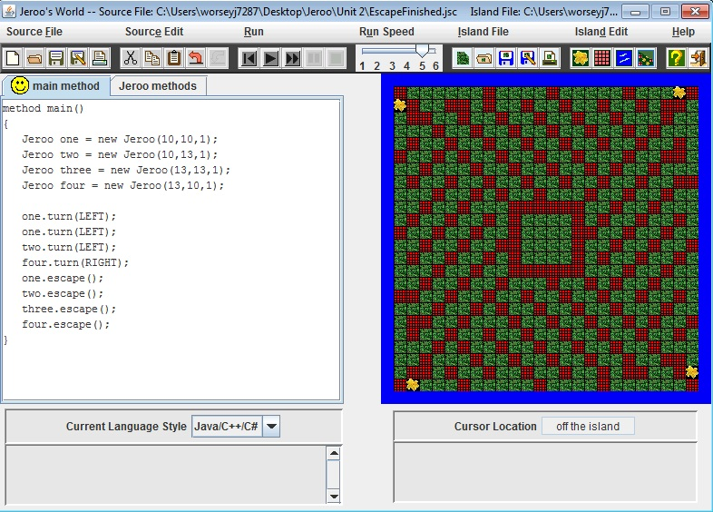
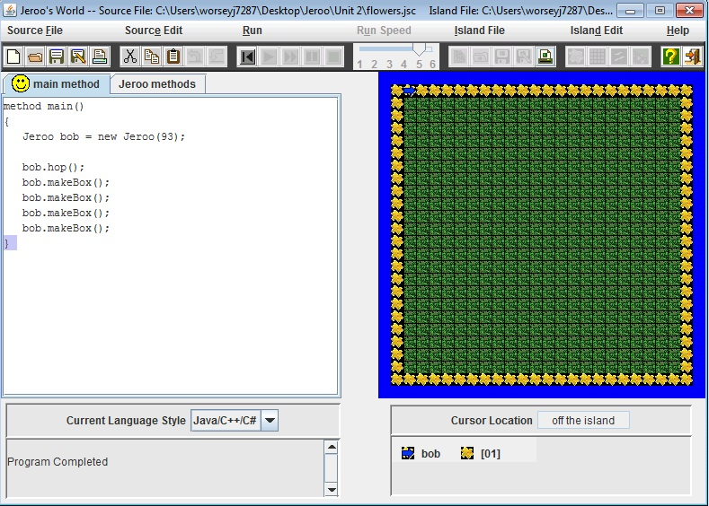
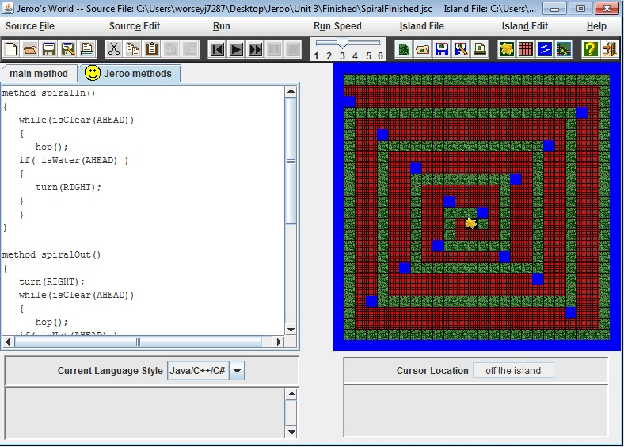
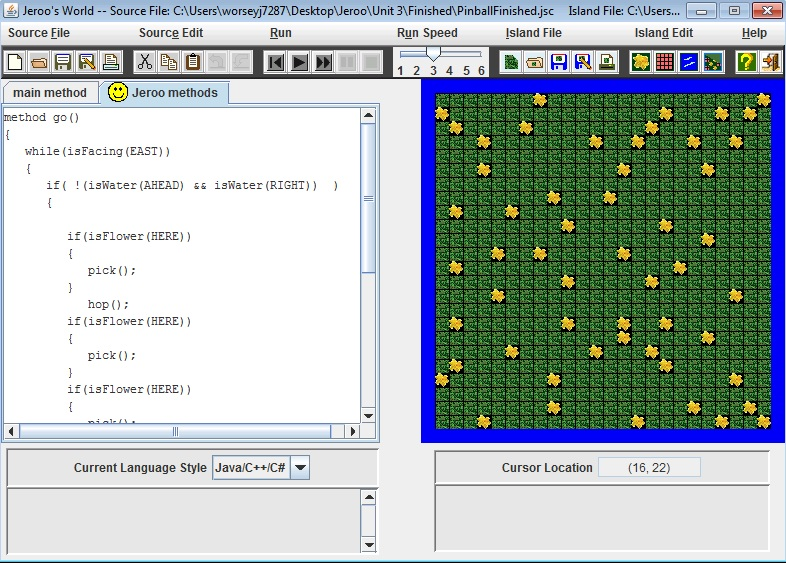
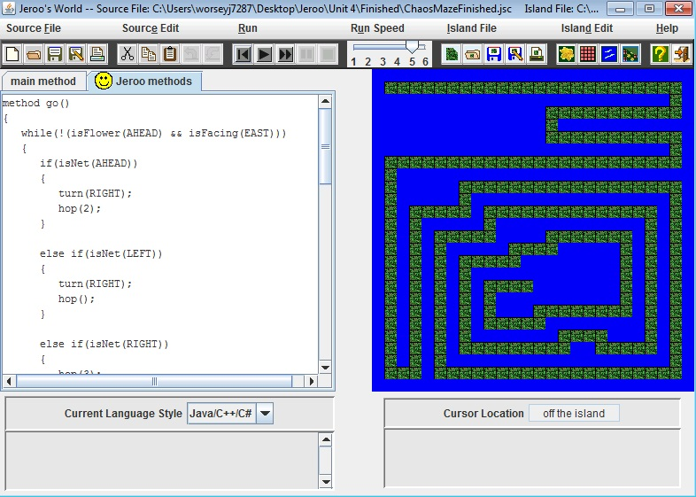
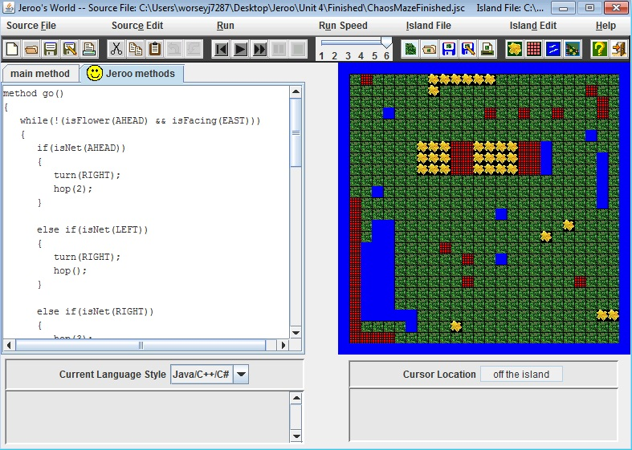

Jeroo Content
Unit 1
In unit 1 we learned the basics of Jeroo. We learned how to create a jeroo, make the jeroo move and plant/pick up flowers.
Diamond Project
In this project we made the jeroo plant a flower in a diamond shape around the island.

Fenced in Project
In this project we made the jeroo navigat through a maze of fences and then when the jeroo got to the end it threw a flower onto one of the nets and escaped.

Unit 2
In Unit 2 we learned how to create methods which we could call the method which had repeated code int it and would reduce the amount of code.
Great Escape Project
For this project there were four Jeroo's trapped in a box surrounded by net's. To get the Jeroo's out we created a method, and all the jeroos had to do the same thing, so they all used the same method to escape.

Flower Project
For this project the Jeroo had to create a box of flowers around the perimeter of the island. Since for each side of the box the Jeroo had to do the same thing the method for one side was called for all four of the sides

Unit 3
In unit 3 we learned how to create loops. The loops were used to repeat whatever was inside them.
Spiral Run Project
For this project we had to create a loop that would make the Jeroo get to the center of the spiral with out touching any of the nets or the water andthen get back out of the spiral. I created a loop that made the jeroo hop unless there was water ahead. If there was water ahead the Jeroo would turn right and the continue hopping.

Pinballs' Journey Project
For this project we had to make the Jeroo Pick up all of the flowers. I created a loop that made the Jeroo go across the island picking up flowers as it went along. When the Jeroo made it to the end it would go down a row and back to the other side of the island. The Jeroo would keep repeating this until it made it to the bottom.

Unit 4
In unti4 we learned how to do conditional statements. The statements would make something happen if the condition was true. We combined these with the loops to make the code shorter and simpler.
Island Maze
In this project the goal was to have the jeroo navigate through the maze and other mazes all with the same code. The code had the jeroo turn right when the water waas on the left and ahead and the smae thing was done for turning left, but with the directions reversed. The jeroo would stop when there was water on all sides(ahead, left, right).

Chaos Maze
For this project the goal was to create a program where, depending on what the Jeroos' surroundings were, it would do different actions. The Jeroo had to end up facing East with a flower Ahead.
